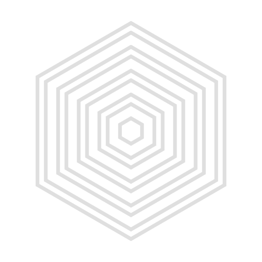

SMER · SUBSPACE REACTOR START-UP SEQUENCE
The Reactor
Icarus Installation
亚空间反应堆 · 操作员
The Reactor
ICARUS INSTALLATION
反应堆游戏 · 亚空间反应堆
SMER
STANDBY
ICARUS INSTALLATION
—
00:00:00
SPACE 播放 · ←→ 逐秒 · R 重播
▶
⟲
00:00 / 01:16